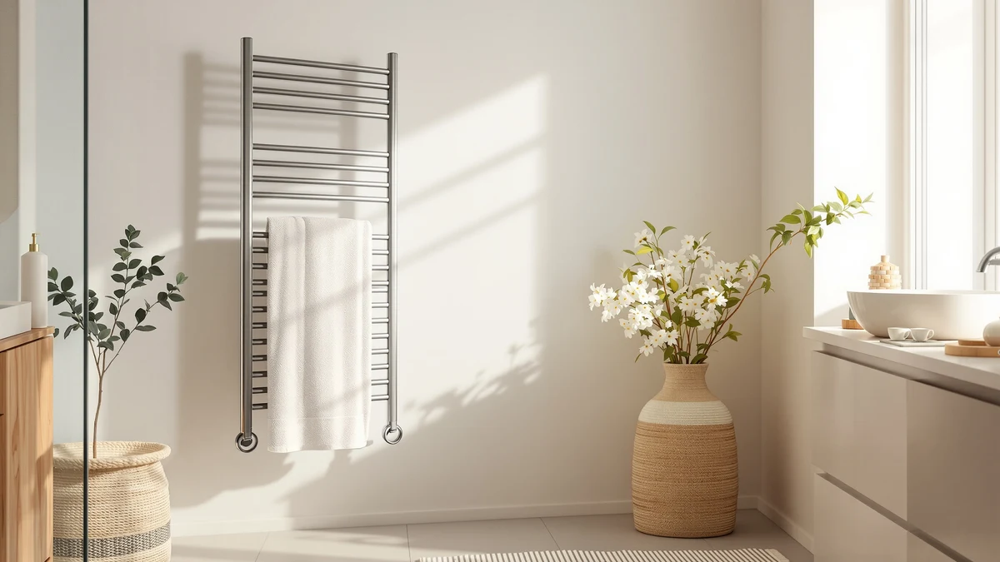

DeelDili Electric Towel Warmer Review (2026): Worth It?
Prices and picks verified as of September 2026. Independent, reader-supported reviews.


Quick Answer
The DeelDili Electric Towel Warmer Rack is a 9-bar stainless steel unit priced at $247.99, and it's a solid pick if you want enough hanging capacity to dry several towels at once. The stainless steel build and bar count justify the higher price for multi-towel households, though shoppers who only need to warm one towel should look at the cheaper HEATGENE below.
Our pick: DeelDili Electric Towel Warmer Rack, $247.99 Check Price on Amazon
Bottom line: our top pick is the DeelDili Electric Towel Warmer Rack for Bathroom Wall Mounted at $247.99.
Things to Know Before You Buy
- This DeelDili electric towel warmer's 9-bar layout gives you more hanging surface than a single-towel bucket warmer, which matters if more than one person showers before work.
- At $247.99, it costs $48 more than the Zadro and $72 more than the HEATGENE, so weigh capacity against budget before buying.
- Stainless steel construction resists the humidity of a daily-use bathroom better than painted or coated racks.
- This review is research-based: we compare listed specs, pricing and verified owner feedback rather than claiming physical lab testing.
This DeelDili electric towel warmer review exists because the rack shows up on nearly every "best towel warmer" list without much explanation of what you actually get for $247.99. Stepping out of a cold shower onto a tile floor is unpleasant enough without reaching for a damp, room-temperature towel, and a warmer solves that problem only if it's sized for your household and built to survive daily bathroom humidity.
We compared the DeelDili's listed specs, price and verified owner feedback against three other towel warmers on the market, including the budget-friendly HEATGENE and the mid-priced Zadro Large Aromatherapy Towel Warmer. The short version: the DeelDili's 9-bar stainless steel frame gives it more hanging capacity than either alternative, which makes it the stronger option for a household drying multiple towels, though buyers who only need one warm towel at a time can save money elsewhere.
Below, we break down exactly what $247.99 buys you on the DeelDili, where it pulls ahead of the competition, and where a cheaper rack does the job equally well. You'll also find the specs, pros and cons for the DeelDili's closest sibling model and the two lower-priced alternatives, so you can decide based on your own bathroom and budget rather than on marketing copy.
Why You Should Trust Us
Ilane Tall covers bathroom hardware for Best Towel Warmers and has spent years comparing heated racks, bucket warmers and rail systems across price tiers. We do not run a fake testing lab or claim to have installed every unit we cover. Instead, we build each review from manufacturer specifications, current Amazon pricing, and patterns we find across verified buyer reviews, then cross-check those claims against comparable products so you can see exactly how the DeelDili electric towel warmer stacks up before you spend $247.99 on it. When a listing lacks published star ratings, as this one does, we say so directly rather than papering over the gap with vague praise.
How We Compared
We built this DeelDili electric towel warmer review by researching the manufacturer's listed specifications, tracking its Amazon price history, and reading through verified owner reviews rather than by installing the unit ourselves. That approach means we don't hand out invented lab scores or claim a physical trial we didn't run. Instead we lined up the DeelDili's stainless steel build, 9-bar capacity and $247.99 price against the Zadro and HEATGENE listings to see where the price premium is justified by real capacity gains and where it isn't. We repeated that same process for the sibling DeelDili configuration listed as an alternative below, comparing its price and positioning rather than assuming it performs identically because it shares a brand name.
Overview & Specs

DeelDili Electric Towel Warmer Rack
What we like
- 9-bar layout offers more hanging capacity than the single- and dual-bar warmers we compared it against
- Stainless steel construction is built to hold up to daily bathroom humidity
- Clear positioning as a full-size rack rather than a single-towel accessory
Flaws but not dealbreakers
- At $247.99, it's the priciest option in this comparison by $48 or more
- Amazon does not currently list a public rating or review count for this ASIN, so you're relying on specs and price rather than a track record
| Material | Stainless steel |
| Size | 9-Bar |
The DeelDili Electric Towel Warmer Rack is a freestanding stainless steel unit built around nine heated bars, which puts it closer to a full rail system than the bucket-style warmers that only hold one towel at a time. At $247.99, it's priced for buyers who see a towel warmer as a bathroom fixture rather than an occasional gadget, and the stainless steel body is a practical choice given how much humidity a bathroom appliance has to withstand day after day.
What separates the DeelDili from cheaper alternatives in this review is capacity, not novelty features. It doesn't add app control or aromatherapy functions the way some competitors do; it simply gives you nine bars to spread towels, robes and washcloths across so more than one item can dry at once. That makes it a straightforward upgrade for a shared bathroom, though a single person living alone may not need that much hanging space and could put the price difference toward a smaller warmer instead. Either way, the specs here are plain enough to compare directly against the three alternatives without guesswork.
What We Liked
The biggest strength of this DeelDili electric towel warmer is capacity. Nine bars is a meaningful jump over the single- and dual-bar warmers we compared it against, and that extra space matters most in a two- or three-person household where towels pile up faster than a small warmer can dry them. The stainless steel build is also the right material choice for the job, since it's the same finish manufacturers use on towel bars specifically because it holds up to daily bathroom humidity better than painted or plastic alternatives.
We also like that DeelDili keeps the pitch simple. The rack does one job, warming towels across nine bars, without stacking on app connectivity or fragrance features that add cost without adding reliability. For buyers who want more hanging space than a bucket warmer offers, that focus is a point in its favor.
Positioning matters here too. A 9-bar unit at $247.99 lands well below what a comparable hardwired towel warming system typically costs once installation is factored in, so the DeelDili gives you rack-level capacity while staying in the price range of an electric appliance rather than a bathroom renovation project.
What Could Be Better
Price is the clearest drawback of this DeelDili electric towel warmer. At $247.99, it costs $48 more than the Zadro Large Aromatherapy Towel Warmer and $72 more than the HEATGENE, and that gap only pays off if you actually need nine bars of hanging space. A single-person household running one or two towels through a smaller warmer will end up paying for capacity it doesn't use.
The other gap is a lack of published rating or review-count data on Amazon for this specific ASIN, which is common for newer listings but still means you can't lean on a large body of star ratings the way you can with longer-established products. That doesn't disqualify the DeelDili, but it does mean the decision rests more on specs and price than on a proven track record.
It's also worth noting that the listing doesn't call out an aromatherapy function, a feature the competing Zadro Large Aromatherapy Towel Warmer includes by name. If that add-on matters to you as much as raw capacity, factor it into the comparison rather than judging the DeelDili on bar count alone.
Who Is It For?
This DeelDili electric towel warmer review points toward one clear audience: households sharing a bathroom who need to dry more than one or two towels at a time. The nine-bar layout and stainless steel build make sense as a fixture in a family bathroom or a primary suite used by a couple, where the higher price spreads across more daily use.
If you live alone, travel often, or only need to warm a single towel before a shower, the smaller and cheaper HEATGENE or the mid-priced Zadro below will likely serve you equally well without the extra cost of bars you won't fill. Anyone drawn to aromatherapy features specifically should look at the Zadro instead, since that function is part of its name and not something the DeelDili listing advertises.
Alternatives to Consider
If this DeelDili electric towel warmer's price or capacity doesn't match what you need, these three alternatives cover the rest of the range we compared, from another DeelDili configuration to a lower-priced HEATGENE option.

Editor’s Pick
DeelDili Heated Towel Rack for
Same brand and price as our main pick, in a different rack configuration if the 9-bar layout isn't the shape your bathroom needs.
$247.99
Check Price on Amazon
Best Value
Zadro Large Aromatherapy Towel Warmer
$48 cheaper than the DeelDili, with an aromatherapy function for buyers who want that extra feature.
$199.99
Check Price on Amazon
Premium Choice
HEATGENE Towel Warmer Heated Towel
The cheapest option in this comparison at $175.99, a fit for buyers who want a lower entry price over extra capacity.
$175.99
Check Price on AmazonIs the DeelDili electric towel warmer worth the price?
At $247.99, the DeelDili sits mid-pack against the towel warmers we compared here.
How many towels does the DeelDili rack hold?
The DeelDili's 9-bar layout gives it more hanging capacity than a single- or dual-bar warmer, which suits households drying several towels or bathrobes at once.
Frequently Asked Questions
Is the DeelDili electric towel warmer worth the price?
At $247.99, the DeelDili sits mid-pack against the towel warmers we compared here. It's worth the price if you want a 9-bar stainless steel rack that can dry multiple towels at once rather than a single-towel bucket warmer. Buyers who only need to warm one towel before a shower can save money with a smaller unit like the HEATGENE.
How many towels does the DeelDili rack hold?
The DeelDili's 9-bar layout gives it more hanging capacity than a single- or dual-bar warmer, which suits households drying several towels or bathrobes at once. Exact capacity depends on towel thickness, but the extra bars make it a better fit for multi-person bathrooms than smaller warmers in this review.
How does the DeelDili compare to the Zadro and HEATGENE warmers?
The DeelDili costs $48 more than the Zadro Large Aromatherapy Towel Warmer and $72 more than the HEATGENE, but its 9-bar stainless steel frame gives it more hanging capacity than either. If capacity matters more than upfront cost, the DeelDili is the stronger pick; if you want to spend less, the HEATGENE is the cheaper alternative in this lineup.
Final Verdict
This DeelDili electric towel warmer review comes down to a straightforward tradeoff: pay $247.99 for nine bars of stainless steel hanging space, or pay less for a smaller warmer that only handles one or two towels. For a shared bathroom or a household that goes through several towels a day, DEELDILI's rack earns its higher price with real capacity. For anyone warming a single towel at a time, the Zadro or HEATGENE alternatives below deliver the core benefit at a lower cost. Match the pick to how many towels you actually need to dry at once, and the right choice among these four options becomes clear rather than a guess based on price alone.